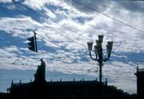
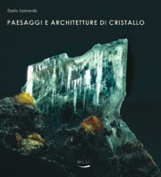
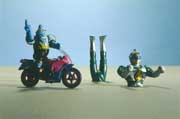

Mostre ed eventi
LE PROSSIME INIZIANTIVE GIUGNO-SETTEMBRE 2014
21-29 giugno 2014, a Piozzo (Cuneo) fotografie nell'ambito della manifestazione COME L'ACQUA CHE SCORRE promossa da ELLISSE
14 giugno - 15 settembre 2014, Stazione d'arrivo della Dentiera a Superga (Torino) mostra CHE COSA SONO LE NUOVOLE? (con la collaborazione di Luca Mercalli e Daniel Cat Berro)
MAGGIO-OTTOBRE 2012
Il 10 maggio 2012 ( giovedì), ore 18 inaugurazione della Mostra Graphic Novel "Il principio di ARCHIMEDE" opera di Marco D"Aponte, con tavole originali del graphic, dipinti , fotografie scattate da Dario sulla nave Punta Amica nella quale era imbarcato come allievo ufficiale. La mostra è al Museo di Scienze naturali di Torino via Giolitti 36, sino al 17 giugno.
Da metà luglio sino al 6 settembre la mostra sarà esposta al castello di Lerici, in provincia di La Spezia.
Si inaugura il 19 maggio 2012 la mostra sulle Nuvole con foto di Dario insieme a opere del pittore Carena a Murazzano, dal titolo "Dialogo tra le nuvole".
Dal 24 maggio al 10 giugno, altra mostra sulle Nuvole, a Villa Caccia a Romagnano Sesia.
Una mostra sulle armature a Casa Cavassa a Saluzzo aperta 30 giugno -26 agosto 2012, con organizzazione di eventi ad hoc. (e successivamente "Cosa sono le nuvole", dal 9 dicembre 2012).
A Fosdinovo di Lunigiana la Giunta comunale (" secondo la tradizione di scegliere un autore locale o un evento ogni anno ") dedica a Dario il mese di agosto 2012 per l"evento "l"artista dell"anno" con mostra antologica, presentazione del libro "Il desiderio dell"acqua" e altri suoi libri nel torrione del castello Malaspina.
Si stanno preparando fuori Torino le presentazioni degli ultimi libri con mostra: a Genova, e La Spezia e forse Lerici sul graphic novel "Il principio di Archimede"

Cosa sono le nuvole?
Al Museo Regionale di Scienze Naturali di Torino (dal 22 aprile al 31 maggio)
Cosa sono le nuvole? E’ la domanda, significativamente senza risposta, che Pierpaolo Pasolini si pone, con l’omonimo film, per mettere in scena lo scarto fra le vicende della nostra vita quotidiana e la ‘straziante bellezza del creato’. Diverso e, forse eccessivamente fiducioso nella scienza, è l’atteggiamento di Cartesio che, osservando le nuvole, pensò che se fosse riuscito a spiegare la natura delle nubi “si crederà facilmente che sia possibile, nello stesso modo, scoprire la causa di tutto quello che v’è di più ammirabile al di sopra della Terra”.
Poesia e scienza, ma anche religione e religiosità, dunque, attorno ad uno dei più suggestivi fenomeni naturali che Dario Lanzardo ha rappresentato con una grande mostrafotografica, corredata di testi, allestita nei locali del museo di Scienze Naturali di Torino.
Il ricco catalogo curato dall’autore (Hapax Editore) è introdotto da un saggio illustrato, da un scritto sulle nuvole in pittura (Liliana Guazzo), e da un testo illustrato sulla contaminazione delle nuvole (Vittorio Marchis). Sotto molte immagini del volume e in mostra compaiono brevi testi scientifici o letterari scelti o scritti dall’autore.
Il percorso si articola in sezioni introdotte ciascuna da un testo esplicativo:
- Come si formano le nuvole
- A chi appartengono le nuvole?
- Nuvole mitologiche e mistiche
- Il volto delle nuvole
- Il colore delle nuvole
- Estetica del tramonto
- Paesaggi con nuvole
- Sopra il cielo della città

Paesaggi e architetture di cristallo
Fotografie di Dario Lanzardo
(Blu edizioni)
17 dicembre – 15 febbraio 2008
Lunedì 17 dicembre alle ore 18, inaugurazione della mostra e presentazione del relativo catalogo con la partecipazione dell’Assessore alla cultura della Regione Piemonte Gianni Oliva, la direzione del Museo e l’autore.
Pensata come supporto scenografico alla mostra Mineralia, in corso nei locali del Museo di Scienze Naturali di Torino, la sequenza di immagini che Dario Lanzardo espone negli stessi locali riprende e sviluppa alcuni temi già affrontanti nelle sue precedenti mostre organizzate dal Museo stesso, Arca Naturæ e Omaggio a Goethe, forme e colori di natura. Fotografando dettagli di pezzi scelti fra le collezioni museali, inquadrandoli da punti di vista insoliti, o con particolari tagli di luce, Lanzardo intende innanzi tutto richiamare l’attenzione sulla bellezza della natura, convinto che lo stupore indotto possa farci riflettere sulla necessità di non usare la materia costitutiva e irripetibile di questo nostro unico pianeta, come una qualunque merce prodotta dalla civiltà. Usando il linguaggio fotografico in chiave metaforica, per cui, ad esempio, un pezzetto di minerale ci appare nell’imponente, simbolica veste di una montagna, vuole ricordarci, con Goethe, come nel ‘piccolo’ ci sia già il ‘tutto’, come lo spirito della natura, la sua essenza, si possa cogliere in un granello di sabbia o in un fiocco di neve. Gli accostamenti fatti fra alcune immagini di cristalli e opere di grandi architetti o scrittori, evidenziano come la natura, per dirla con Gaudì, sia un ‘libro già stampato’ nelle cui pagine l’ingegno umano ha da sempre attinto regole e forme per le proprie costruzioni e, anche per questo, sia da conservare e proteggere come il più prezioso dei manoscritti.
Alle ore 19 dello stesso giorno, dopo un drink, inaugurazione della retro-illuminazione delle gigantografie dello stesso Lanzardo, ARCA NATURAE, che chiudono le 21 finestre del palazzo, lato piazzale Valdo Fusi, prevista dal programma Contemporary Arts Torino Piemonte ottobre-dicembre 2007.

Molti dei lavori citati, e altri, sono stati oggetto anche di una quarantina di esposizioni personali in gallerie, spazi pubblici e privati in Italia e all'estero, in particolare:
Palazzo Reale di Torino, Museo d'Arte di Filadelfia, Palazzo Broletto di Novara, Castello S.Giusto di Trieste, Grotte Baldini di Ferrara, Castel S.Angelo di Roma, Chiesa di S.Bernardino di Ivrea, Museo della Guerra di Rovereto, Museo dell'Automobile di Torino, La Mandria della Venaria Reale, Palazzo Cesi di Acquasparta, Museo di Scienze Naturali di Torino, Certosa di Pisa, Abbazia di Vezzolano di Asti, Palazzina delle Arti di La Spezia, Circolo degli Artisti a Torino.
L’ultima esposizione, alla Sala Bolaffi di Torino, sarà L’Eterno gioco del Doppio, Dario Lanzardo fotografo, a cura di Francesco Poli, a partire dall’8 settembre 2006.